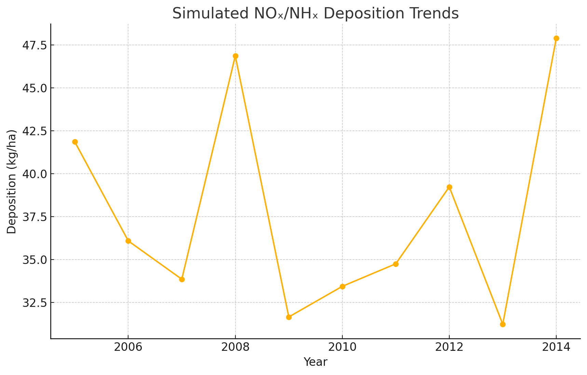

Overview
During my Geophysical Data Science course, I analyzed multi-decade model outputs of NOₓ and NHₓ deposition. I performed exploratory data analysis, statistical extraction, and adapted existing Python code to generate publication-quality figures.
This time-series plot illustrates changes in deposition over time, highlighting spike and dip events that I then investigated further.
← Back to Experience